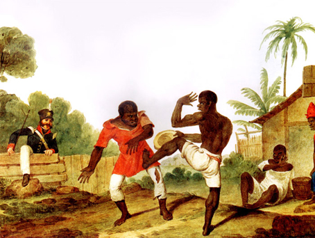
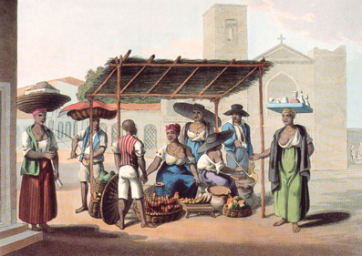
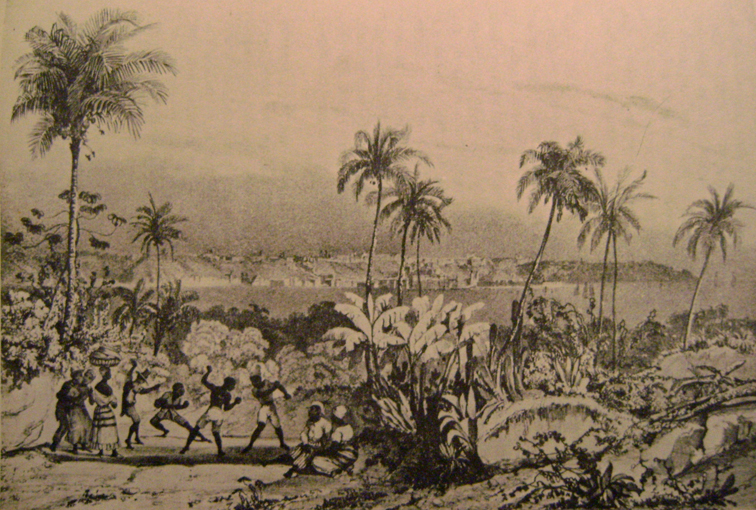

Sobre a capoeira
A arte marcial afro-brasileira no período da escravidão
A capoeira é hoje praticada em todo o mundo por milhões de pessoas. Mas durante muito tempo — especialmente nos séculos XVIII e XIX — ela foi perseguida, proibida e associada à resistência de escravizados e libertos nas cidades brasileiras. Compreender essa história é essencial para entender a própria história do Brasil.
Em sua forma mais antiga, a capoeira era um conjunto de práticas corporais que misturava luta, dança e jogo. Era praticada por africanos e seus descendentes nas ruas, largos e chafarizes das cidades. Não era apenas entretenimento: era também uma forma de afirmar identidade, demonstrar coragem e criar vínculos de solidariedade entre pessoas que viviam sob o regime da escravidão. O corpo era, muitas vezes, o único recurso disponível.
Os viajantes europeus que visitaram o Brasil no século XIX ficaram impressionados com o que viram. Artistas como Johann Moritz Rugendas, Augustus Earle e Henry Chamberlain registraram cenas de capoeira em suas pinturas e gravuras — algumas das primeiras imagens visuais que temos dessa prática. Rugendas, em sua célebre obra Viagem Pitoresca Através do Brasil (1835), descreveu o jogo como “uma espécie de dança de guerra” e retratou dois combatentes rodeados por espectadores que marcavam o ritmo. Earle, por volta de 1820, pintou uma cena intensa de dois homens lutando no Rio de Janeiro. Chamberlain, na mesma época, registrou um vendedor ambulante carregando o berimbau — instrumento musical indissociável da capoeira.
Johann Moritz Rugendas
“Jogar Capoeira”, c. 1835. Uma das primeiras imagens da capoeira conhecidas.

Augustus Earle
“Negros lutando”, c. 1820. Cena de luta no Rio de Janeiro.

Henry Chamberlain
“Vendedor com berimbau”, c. 1820. O instrumento é símbolo da capoeira.

Rugendas — Batuque
Dança e música afro-brasileira em São Salvador, c. 1835.
Em São Paulo, a primeira menção documentada à capoeira data de 1829: uma carta publicada no jornal O Farol Paulistano critica um professor de francês que jogava capoeira no Largo do Chafariz, “servindo de espetáculo aos negros, que quando o vêem dar bem uma cabeçada, o applaudem com bastantes assobios, palmas, gargalhadas”. Apenas quatro anos depois, em 1833, a Câmara Municipal de São Paulo aprovaria a primeira lei proibindo o “jogo denominado de Capoeiras”, com pena de prisão para pessoas livres e açoites para escravizados.
A proibição não extinguiu a prática. Pelo contrário: ao longo do século XIX, os registros mostram que a capoeira continuou presente nas ruas de São Paulo, Santos e outras cidades paulistas, praticada por africanos livres, escravizados e libertos. Nas décadas de 1870 e 1880, capoeiras e “valentes” participaram ativamente do movimento abolicionista — protegendo libertadores, escoltando fugitivos e confrontando capatazes. Era a arte do corpo a serviço de uma causa.
Esta pesquisa rastreou essa história por quase 100 anos — de 1830, quando a capoeira começa a aparecer nos documentos oficiais, até 1930, quando começa a ser reabilitada como arte marcial nacional. Para saber mais, acesse os documentos originais, a linha do tempo e os capítulos da dissertação neste portal.